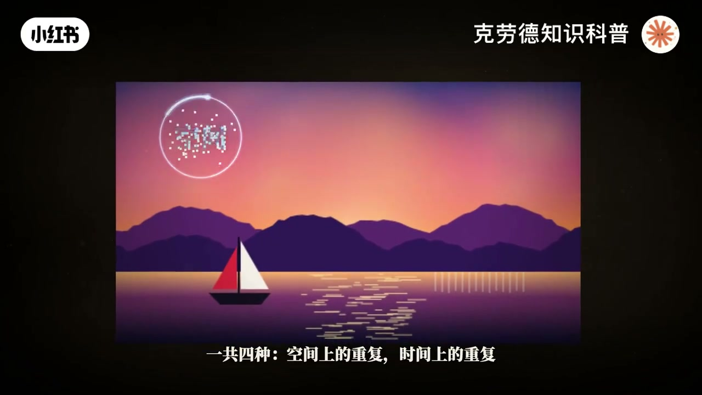
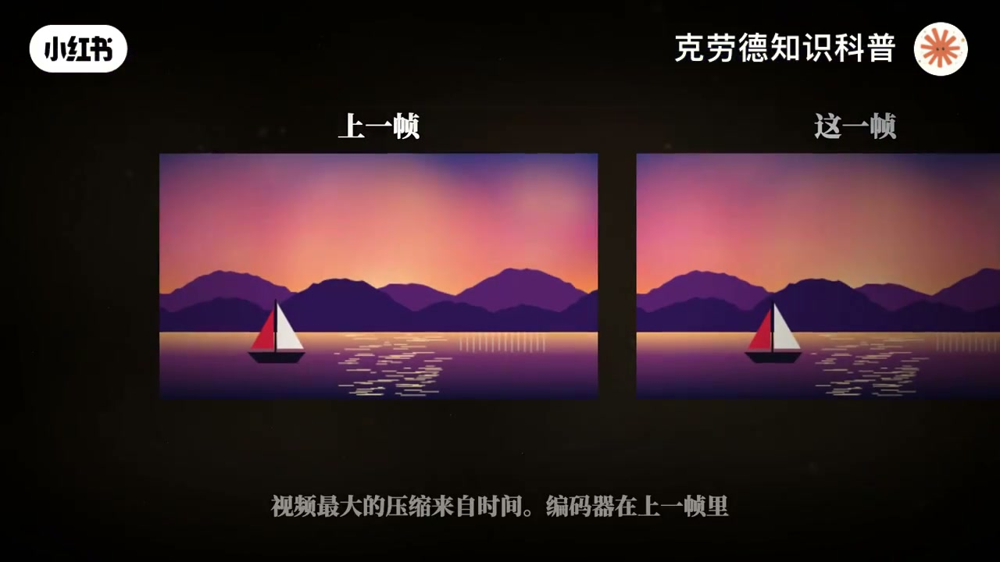
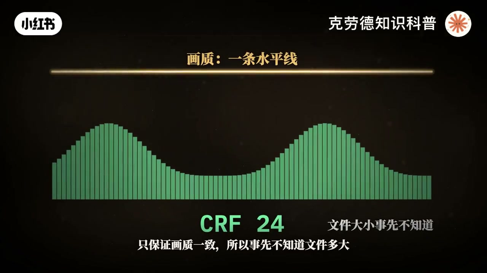
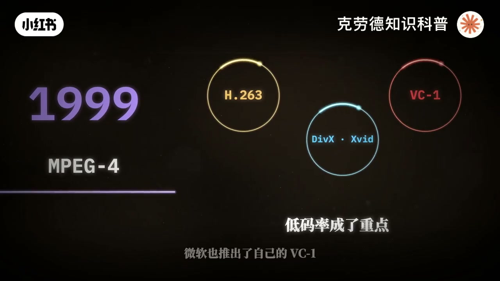
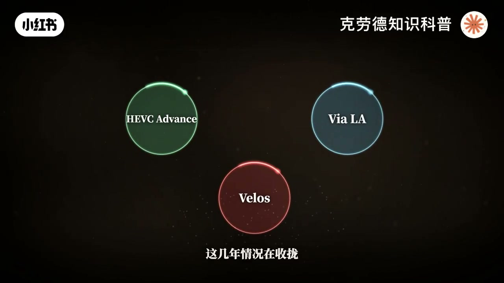
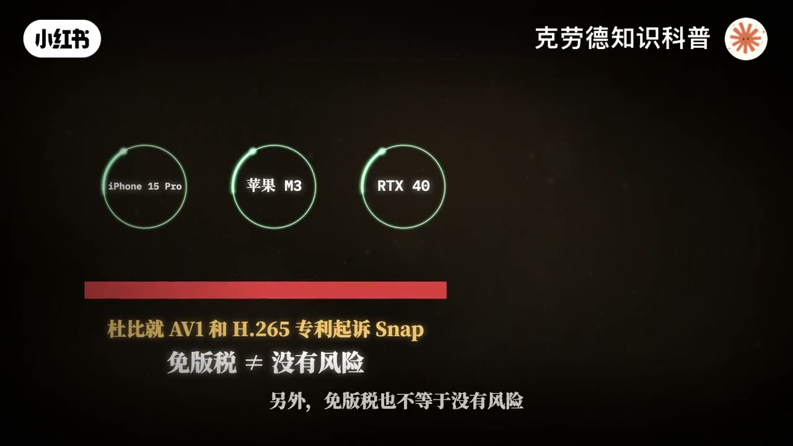
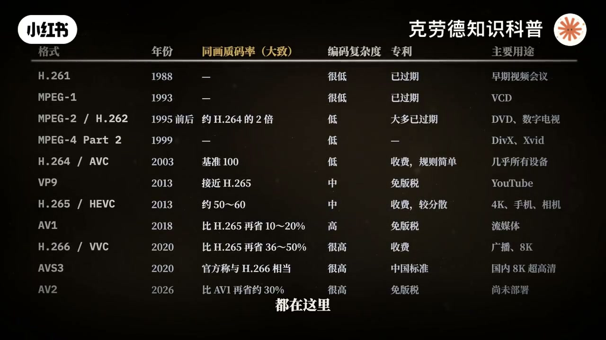
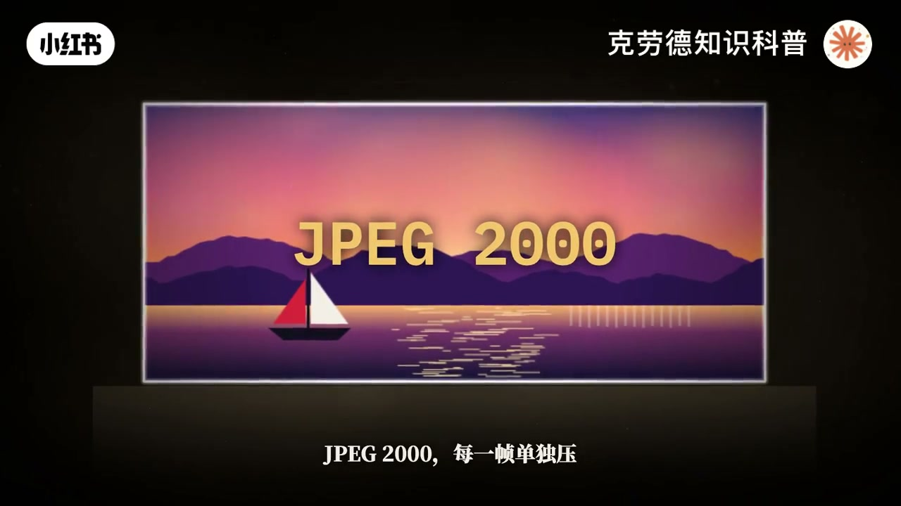
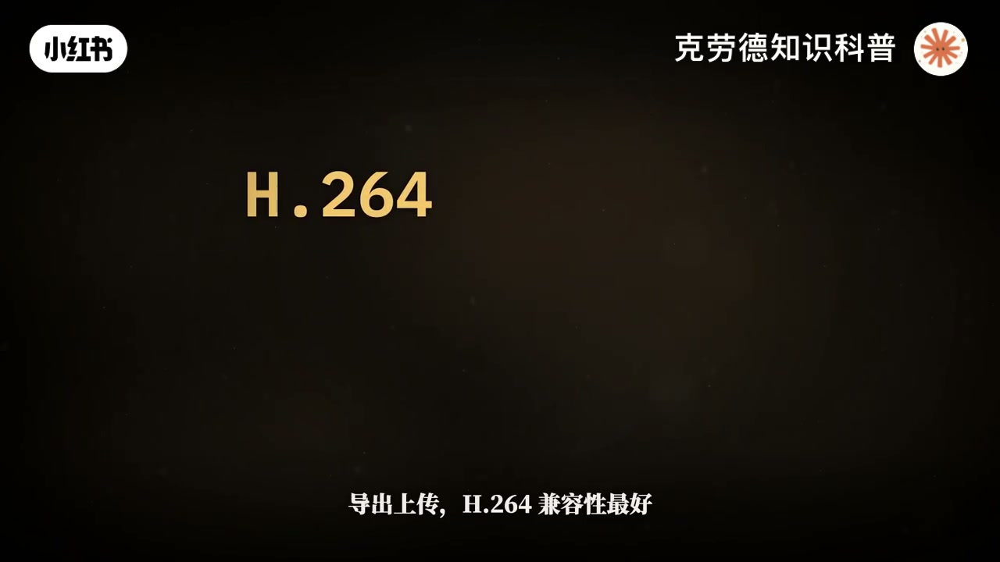

内容要点
「H.264、H.265、AV1 到底差在哪？讲透视频压缩」教程要点：這一期,我們把視頻壓縮從頭到尾講透,它到底是怎麼壓的,這些格式是怎麼一代一代來的,各自有什麼區別,現在又該用每一個。 → 一部兩個小時的4K電影,如果不壓縮,要佔2.15
知识结构
這一期,我們把視頻壓縮從頭到尾講透,它到底是怎麼壓的,這些格式是怎麼一代一代來的
1988年的H261,才是第一個真正能用的標準,為視頻會議而生,切塊運動補償,變
把這40年放到一起規律很清楚,每隔大約10年,碼率減半,付出的代價是計算量成倍增
- 這一期,我們把視頻壓縮從頭到尾講透,它到底是怎麼壓的,這些格式是怎麼一代一代來的,各自有什麼區別,現在又該用每一個。
- 一部兩個小時的4K電影,如果不壓縮,要佔2.15TB,按流媒體常見的每秒15兆來算,只要13.5GB小了大約160倍,丟掉了這麼多數據,畫面看起來卻幾乎沒變,這是怎麼做到的?
- 這一期分三部分,先講壓縮的原理,再講40年的歷史,最後講現狀,和你到底該選哪一個。
- 視頻能被壓縮是因為裡面有大量重複,一共四種,空間上的重複,時間上的重複,視覺上的多餘,還有統計上的重複。
- 第一種,空間重複,一片藍天,相鄰的像素幾乎一模一樣,沒必要每個都存一遍。
這一期,我們把視頻壓縮從頭到尾講透,它到底是怎麼壓的,這些格式是怎麼一代一代來的,各自有什麼區別,現在又該用每一個。
00:00–05:07這一期,我們把視頻壓縮從頭到尾講透,它到底是怎麼
這一期,我們把視頻壓縮從頭到尾講透,它到底是怎麼壓的,這些格式是怎麼一代一代來的,各自有什麼區別,現在又該用每一個。；一部兩個小時的4K電影,如果不壓縮,要佔2.15TB,按流媒體常見的每秒15兆來算,只要13.5GB小了大約160倍,丟掉了這麼多數據,畫面看起來卻幾乎沒變,這是怎麼做到的?；這一期分三部分,先講壓縮的原理,再講40年的歷史,最後講現狀,和你到底該選哪一個。；視頻能被壓縮是因為裡面有大量重複,一共四種,空間上的重複,時間上的重複,視覺上的多餘,還有統計上的重複。；第一種,空間重複,一片藍天,相鄰的像素幾乎一模一樣,沒必要每個都存一遍。；第二種,時間重複,每秒24幀,相鄰兩幀的大部分內容都沒有變,只需要存變化的部分。；第三種,視覺上的多餘,人眼對細碎的紋理和顏色細節不明感,這些信息丟掉一部分,我們也看不出來。；顏色這部分就是上一期講的色度抽樣,感興趣可以回去看。；第四種,統計上的重複,有的數字特別常見,就用很短的編碼表示,少見的才用長編碼。；壓縮分兩種,無損壓縮,解壓之後一模一樣,但壓不了多少。；視頻用的幾乎都是有損壓縮,主動丟掉一部分信息,換來幾十倍甚至上百倍的壓縮比。；先看單獨一幀,從1988年到今天,主流的視頻編碼都是這五步,切塊,預測,變換,量化,商編碼,我們一步一步來看。；第一步,把畫面切成小塊,H264的基本單位是16×16的紅塊,新的格式最大到128×128,天空這種平坦的地方用大塊,細節多的地方切成小塊。；第二步,預測,根據旁邊已經編碼好的像素,沿某個方向猜這一塊長什麼樣,然後只存猜錯的那部分,這叫殘差。；殘差幾乎全黑,數據量小得多,猜的方向越多,猜的越準。H264有九種,H265有35種,H266有67種。；第三步,變換,1974年提出的離散餘弦變換,把一塊向速換一種方式描述,不再說每個點多量,而是說這一塊有多少頻款的變化,多少細碎的變化,大部分信息集中到了少數幾個數上。；第四步,量化,也是真正丟信息的一步,把這些數除以一個數,再四捨五入,細碎的部分大多變成零。除得越狠,文件越小,畫面越差,所謂碼率高低,主要就是再調這一步。；第五步,傷編碼,把這些數用盡量短的編碼存下來。H264引入的Cutback,比同一標準里較簡單的方法,還能再省大約10%。；因為是按快壓的,快與快的邊界容易露出來,這叫快效益,所以解碼時還要加一道區塊濾波,把邊界抹平。H264把這一步放進了編碼循環里,後面的針也能參考濾波後的乾淨畫面。；視頻最大的壓縮,來自時間。編碼器在上一針里,找到和當前這塊最像的位置,只存一個箭頭,這叫運動時量,再存一點殘差。這一步叫運動補償。；針分三種,I針,只靠自己,體積最大。P針,參考前面的針。B針,同時參考前後的針,體積最小。；從一個I針到下一個I針,這一組叫GOP,這就是為什麼長G,OP的素材拖進補調會卡。你要看的這一針,得從前面的I針一路算過來。；所以最難壓的,是下雨,水面,止洩,每個小塊都在亂動,運動補償幫不上忙。造點也是一樣,造點每一針都不同,等於全是新信息。；馬律怎麼分配,常見的有三種,固定馬律,可變馬律,恆定畫質。；固定馬律,每秒的數據量基本不變,網絡和設備最好處理,常用於直播,但簡單的畫面浪費,複雜的畫面不夠用。；可變馬律,設定一個平均值,簡單的畫面少給,複雜的畫面多給。兩遍編碼,就是第一遍先分析全片,第二遍再分配。；恆定畫質,就是CRF,不管馬律,只保證畫質一致,所以事先不知道文件多大,數值越小,畫質越高,文件越大。；馬律不夠實,畫面會一步步變差,先是暗部和天空出現斷層,再是邊緣出現細碎的紋造,最後整片變成方塊。；視頻編碼的標準,主要由兩個組織制定,國際電聯的ITU負責通信,國際標準化組織的MPEG負責媒體,他們十二各做各的,十二聯手。；1984年的H120,是第一個數字視頻編碼標準,但效果太差,幾乎沒有實際用上。


05:12–09:321988年的H261,才是第一個真正能用的標準,
1988年的H261,才是第一個真正能用的標準,為視頻會議而生,切塊運動補償,變換編碼,這套骨架從它開始一直用到今天。；1993年的MPEG-1,加入了避震,把電影壓進了VCD,很多人的第一部數字電影就是這個格式。；1995年前後的MPEG-2,也叫H262,是兩個組織聯手的成果,撐起了DVD和數字電視用了很多年。；網絡時代來了,低碼率成了重點,H263用於視頻通話。；1999年的MPEG-4,第二部分,催生了DIVX和ATID,微軟也推出了自己的VCE。；2003年,兩個組織再次聯手,推出了H264,也叫AVC,同樣的畫質,碼率大約只有MPEG-2的一半。；它的進步來自一堆工具,快的大小可以變,可以參考多個針,還有更高效的商編碼和區塊濾波。；真正讓它稱霸的是生態,幾乎所有設備都能應節,專利也基本集中在一個專利池,規則簡單,網上免費觀看的視頻也不用交費。；到了2026年,一份行業調查顯示,85%的受訪者仍在生產環境使用H264。；2013年的H265,也叫HEDC,最大的快從16漲到64,預測方向增加到35種。；官方的主觀測試顯示,同等畫質碼率能省一半以上,按客觀指標算,省大約40%到45%。；4K藍光用的就是它,2017年蘋果在IOS11上全面支持,才真正推動了普及。；可H265有一個大問題,專利太亂,H264基本一個池的收費,H265的專利卻分散在三個專利池,還有不少公司單獨收費。；一家公司想用,根本算不清要交給誰,交多少。；這幾年情況在收攏,2023年Vellos不再運營專利池,2025年底Access Advance收購了VLA的HEDC和VVC專利池業務,但已經造成的傷害改變了整個行業的走向。；Google早就不想交專利費了,2010年它收購了ONR,開源了VP8,2013年推出VP9,用在YouTube上。；H265的專利混亂把大公司推到了一起,2015年Google、亞馬遜、司科、英特爾、微軟、Mazilla、奈飛組成開放媒體聯盟,目標是做一個免版稅的編碼。；2018年發布了AVE,AVE的快最大到128×128,還有一招很聰明,膠片顆粒和噪點最難壓,AVE也可以把顆粒去掉單獨描述,播放時再合成回去。；多項測試顯示,它比H265大約省10%到20%,不同的內容和指標差別很大。；2025年底,奈飛說AVE已經佔到它全部觀看量的30%,iPhone 15 Pro、蘋果M3、英偉達RTX40系列開始,硬件支持逐步普及。；代價是編碼很慢,多項研究顯示,它的複雜度大約是H265的4-10倍。；另外,連版稅也不等於沒有風險,杜比已經就AVE和H265專利起訴了Snap。；2020年的H266也叫VVC,官方說法是比H265再省一半。；學術測試裡,用參考軟體大約省36%,代價是編碼時間大幅增加。；它也有專利費的問題,目前用的最多的是廣播領域,比如巴西的下一代電視標準TV3.0。；在2016年的調查裡,只有5%的受訪者在生產環境使用。；2026年5月,AV2的1.0規範正式發布,測試顯示比AVE再省大約三成同樣免版稅。；但是解碼的負擔也重了好幾倍,目前還沒有硬件支持。；中國也有自己的標準AVS,第三代AVS3的基準檔次在2020年發布。；官方稱編碼效率與H266相當,也被用在8K超高清轉播上,並被歐洲的DVB標準體系坦納。



09:37–13:15把這40年放到一起規律很清楚,每隔大約10年,碼
把這40年放到一起規律很清楚,每隔大約10年,碼率減半,付出的代價是計算量成倍增長。；壓縮,本質上是在用算力換代寬。；把主要的格式放到一張表裡,發布年份,相對效率,編碼複雜度,專利情況和主要用途都在這裡。；上面講的主要是發布用的編碼,實際拍視頻,編碼分三類,發布用的,剪輯用的,還有RAW。；相機裡常見的H264和H265屬於發布用的編碼技術,省空間,但剪輯時電腦很吃力。；索尼的X-AVC-S是H264,X-AVC-HS是H265,X-AVC-SI是全幀內,每一幀單獨壓,碼率高,剪輯輕鬆。；專門用來剪輯的有蘋果的ProRes和Avid的DNX,全部幀內壓縮,解碼輕鬆,畫質高,就是文件大。；ProRes 422HQ在1080P 30幀下,碼率大約220兆。；RAW不等於不壓縮。；尼康的NRAW,ProResRAW,BlackMagicRAW,RED的RedCode壓的都是傳感器的原始數據,只是方法不同。；其中BlackMagicRAW有一部分反拜爾在機內就做了,所以也有人覺得它不算純粹的RAW。；電影院放映用的數字拷貝用的又是另一種,JPEG 2000,每一幀單獨壓,最高每秒250兆,追求的是畫質和穩定,不在乎文件大小。；還有一個常見的誤會,MP4,MOV,MPV不是編碼,是裝飾品的盒子。；同樣一段H264,從MPV換到MP4,畫質一點不變,也幾乎不花時間。；2026年的一份行業調查,生產環境里H264是85%,H265是58%,AVE是19%,H266是5%,而未來一年計劃採用的AV一排第一35%。；所以,大平台不會只選一種,同一個視頻壓好幾份,老設備拿H264兜底,新設備拿更省流量的H265或AVE。；一個新格式能不能普及,技術只是一半,更重要的是有沒有硬件解碼,專利是否說得清。；從標準發布到真正普及,往往要十年左右。；最後說怎麼選,拍攝時,空間夠就選碼率高的,要重度調色就選10比特。；H265省空間,全真內好剪輯,RAW後期,空間最大。；剪輯時,如果電腦帶不動長GOP的素材,就轉成ProRes,或者生成代理。；導出上傳,H264兼容性最好,碼率給足就行,H265同樣的畫質文件更小。；上傳之後,平台都會重新壓縮,所以盡量給它一個高質量的原文件。；存檔就留原素材或者高碼率的版本,每壓縮一次就會多丟一點。；四十年,從幾乎不能用的H120到今天的AVR,每一代都在回答同一個問題。；哪些信息可以不存,哪些信息可以用算的。；你現在看到的每一幀,其實大部分都不是存下來的,而是被算出來了。；MING PAO CANADA .COM




口述/画面要点（88段）
结合 Whisper medium 与画面大字整理；专有名词已校对。
這一期,我們把視頻壓縮從頭到尾講透,它到底是怎麼壓的,這些格式是怎麼一代一代來的,各自有什麼區別,現在又該用每一個。
一部兩個小時的4K電影,如果不壓縮,要佔2.15TB,按流媒體常見的每秒15兆來算,只要13.5GB小了大約160倍,丟掉了這麼多數據,畫面看起來卻幾乎沒變,這是怎麼做到的?
這一期分三部分,先講壓縮的原理,再講40年的歷史,最後講現狀,和你到底該選哪一個。
視頻能被壓縮是因為裡面有大量重複,一共四種,空間上的重複,時間上的重複,視覺上的多餘,還有統計上的重複。
第一種,空間重複,一片藍天,相鄰的像素幾乎一模一樣,沒必要每個都存一遍。
第二種,時間重複,每秒24幀,相鄰兩幀的大部分內容都沒有變,只需要存變化的部分。
第三種,視覺上的多餘,人眼對細碎的紋理和顏色細節不明感,這些信息丟掉一部分,我們也看不出來。
顏色這部分就是上一期講的色度抽樣,感興趣可以回去看。
第四種,統計上的重複,有的數字特別常見,就用很短的編碼表示,少見的才用長編碼。
壓縮分兩種,無損壓縮,解壓之後一模一樣,但壓不了多少。
視頻用的幾乎都是有損壓縮,主動丟掉一部分信息,換來幾十倍甚至上百倍的壓縮比。
先看單獨一幀,從1988年到今天,主流的視頻編碼都是這五步,切塊,預測,變換,量化,商編碼,我們一步一步來看。
第一步,把畫面切成小塊,H264的基本單位是16×16的紅塊,新的格式最大到128×128,天空這種平坦的地方用大塊,細節多的地方切成小塊。
第二步,預測,根據旁邊已經編碼好的像素,沿某個方向猜這一塊長什麼樣,然後只存猜錯的那部分,這叫殘差。
殘差幾乎全黑,數據量小得多,猜的方向越多,猜的越準。H264有九種,H265有35種,H266有67種。
第三步,變換,1974年提出的離散餘弦變換,把一塊向速換一種方式描述,不再說每個點多量,而是說這一塊有多少頻款的變化,多少細碎的變化,大部分信息集中到了少數幾個數上。
第四步,量化,也是真正丟信息的一步,把這些數除以一個數,再四捨五入,細碎的部分大多變成零。除得越狠,文件越小,畫面越差,所謂碼率高低,主要就是再調這一步。
第五步,傷編碼,把這些數用盡量短的編碼存下來。H264引入的Cutback,比同一標準里較簡單的方法,還能再省大約10%。
因為是按快壓的,快與快的邊界容易露出來,這叫快效益,所以解碼時還要加一道區塊濾波,把邊界抹平。H264把這一步放進了編碼循環里,後面的針也能參考濾波後的乾淨畫面。
視頻最大的壓縮,來自時間。編碼器在上一針里,找到和當前這塊最像的位置,只存一個箭頭,這叫運動時量,再存一點殘差。這一步叫運動補償。
針分三種,I針,只靠自己,體積最大。P針,參考前面的針。B針,同時參考前後的針,體積最小。
從一個I針到下一個I針,這一組叫GOP,這就是為什麼長G,OP的素材拖進補調會卡。你要看的這一針,得從前面的I針一路算過來。
所以最難壓的,是下雨,水面,止洩,每個小塊都在亂動,運動補償幫不上忙。造點也是一樣,造點每一針都不同,等於全是新信息。
馬律怎麼分配,常見的有三種,固定馬律,可變馬律,恆定畫質。
固定馬律,每秒的數據量基本不變,網絡和設備最好處理,常用於直播,但簡單的畫面浪費,複雜的畫面不夠用。
可變馬律,設定一個平均值,簡單的畫面少給,複雜的畫面多給。兩遍編碼,就是第一遍先分析全片,第二遍再分配。
恆定畫質,就是CRF,不管馬律,只保證畫質一致,所以事先不知道文件多大,數值越小,畫質越高,文件越大。
馬律不夠實,畫面會一步步變差,先是暗部和天空出現斷層,再是邊緣出現細碎的紋造,最後整片變成方塊。
視頻編碼的標準,主要由兩個組織制定,國際電聯的ITU負責通信,國際標準化組織的MPEG負責媒體,他們十二各做各的,十二聯手。
1984年的H120,是第一個數字視頻編碼標準,但效果太差,幾乎沒有實際用上。
1988年的H261,才是第一個真正能用的標準,為視頻會議而生,切塊運動補償,變換編碼,這套骨架從它開始一直用到今天。
1993年的MPEG-1,加入了避震,把電影壓進了VCD,很多人的第一部數字電影就是這個格式。
1995年前後的MPEG-2,也叫H262,是兩個組織聯手的成果,撐起了DVD和數字電視用了很多年。
網絡時代來了,低碼率成了重點,H263用於視頻通話。
1999年的MPEG-4,第二部分,催生了DIVX和ATID,微軟也推出了自己的VCE。
2003年,兩個組織再次聯手,推出了H264,也叫AVC,同樣的畫質,碼率大約只有MPEG-2的一半。
它的進步來自一堆工具,快的大小可以變,可以參考多個針,還有更高效的商編碼和區塊濾波。
真正讓它稱霸的是生態,幾乎所有設備都能應節,專利也基本集中在一個專利池,規則簡單,網上免費觀看的視頻也不用交費。
到了2026年,一份行業調查顯示,85%的受訪者仍在生產環境使用H264。
2013年的H265,也叫HEDC,最大的快從16漲到64,預測方向增加到35種。
官方的主觀測試顯示,同等畫質碼率能省一半以上,按客觀指標算,省大約40%到45%。
4K藍光用的就是它,2017年蘋果在IOS11上全面支持,才真正推動了普及。
可H265有一個大問題,專利太亂,H264基本一個池的收費,H265的專利卻分散在三個專利池,還有不少公司單獨收費。
一家公司想用,根本算不清要交給誰,交多少。
這幾年情況在收攏,2023年Vellos不再運營專利池,2025年底Access Advance收購了VLA的HEDC和VVC專利池業務,但已經造成的傷害改變了整個行業的走向。
Google早就不想交專利費了,2010年它收購了ONR,開源了VP8,2013年推出VP9,用在YouTube上。
H265的專利混亂把大公司推到了一起,2015年Google、亞馬遜、司科、英特爾、微軟、Mazilla、奈飛組成開放媒體聯盟,目標是做一個免版稅的編碼。
2018年發布了AVE,AVE的快最大到128×128,還有一招很聰明,膠片顆粒和噪點最難壓,AVE也可以把顆粒去掉單獨描述,播放時再合成回去。
多項測試顯示,它比H265大約省10%到20%,不同的內容和指標差別很大。
2025年底,奈飛說AVE已經佔到它全部觀看量的30%,iPhone 15 Pro、蘋果M3、英偉達RTX40系列開始,硬件支持逐步普及。
代價是編碼很慢,多項研究顯示,它的複雜度大約是H265的4-10倍。
另外,連版稅也不等於沒有風險,杜比已經就AVE和H265專利起訴了Snap。
2020年的H266也叫VVC,官方說法是比H265再省一半。
學術測試裡,用參考軟體大約省36%,代價是編碼時間大幅增加。
它也有專利費的問題,目前用的最多的是廣播領域,比如巴西的下一代電視標準TV3.0。
在2016年的調查裡,只有5%的受訪者在生產環境使用。
2026年5月,AV2的1.0規範正式發布,測試顯示比AVE再省大約三成同樣免版稅。
但是解碼的負擔也重了好幾倍,目前還沒有硬件支持。
中國也有自己的標準AVS,第三代AVS3的基準檔次在2020年發布。
官方稱編碼效率與H266相當,也被用在8K超高清轉播上,並被歐洲的DVB標準體系坦納。
把這40年放到一起規律很清楚,每隔大約10年,碼率減半,付出的代價是計算量成倍增長。
壓縮,本質上是在用算力換代寬。
把主要的格式放到一張表裡,發布年份,相對效率,編碼複雜度,專利情況和主要用途都在這裡。
上面講的主要是發布用的編碼,實際拍視頻,編碼分三類,發布用的,剪輯用的,還有RAW。
相機裡常見的H264和H265屬於發布用的編碼技術,省空間,但剪輯時電腦很吃力。
索尼的X-AVC-S是H264,X-AVC-HS是H265,X-AVC-SI是全幀內,每一幀單獨壓,碼率高,剪輯輕鬆。
專門用來剪輯的有蘋果的ProRes和Avid的DNX,全部幀內壓縮,解碼輕鬆,畫質高,就是文件大。
ProRes 422HQ在1080P 30幀下,碼率大約220兆。
RAW不等於不壓縮。
尼康的NRAW,ProResRAW,BlackMagicRAW,RED的RedCode壓的都是傳感器的原始數據,只是方法不同。
其中BlackMagicRAW有一部分反拜爾在機內就做了,所以也有人覺得它不算純粹的RAW。
電影院放映用的數字拷貝用的又是另一種,JPEG 2000,每一幀單獨壓,最高每秒250兆,追求的是畫質和穩定,不在乎文件大小。
還有一個常見的誤會,MP4,MOV,MPV不是編碼,是裝飾品的盒子。
同樣一段H264,從MPV換到MP4,畫質一點不變,也幾乎不花時間。
2026年的一份行業調查,生產環境里H264是85%,H265是58%,AVE是19%,H266是5%,而未來一年計劃採用的AV一排第一35%。
所以,大平台不會只選一種,同一個視頻壓好幾份,老設備拿H264兜底,新設備拿更省流量的H265或AVE。
一個新格式能不能普及,技術只是一半,更重要的是有沒有硬件解碼,專利是否說得清。
從標準發布到真正普及,往往要十年左右。
最後說怎麼選,拍攝時,空間夠就選碼率高的,要重度調色就選10比特。
H265省空間,全真內好剪輯,RAW後期,空間最大。
剪輯時,如果電腦帶不動長GOP的素材,就轉成ProRes,或者生成代理。
導出上傳,H264兼容性最好,碼率給足就行,H265同樣的畫質文件更小。
上傳之後,平台都會重新壓縮,所以盡量給它一個高質量的原文件。
存檔就留原素材或者高碼率的版本,每壓縮一次就會多丟一點。
四十年,從幾乎不能用的H120到今天的AVR,每一代都在回答同一個問題。
哪些信息可以不存,哪些信息可以用算的。
你現在看到的每一幀,其實大部分都不是存下來的,而是被算出來了。
MING PAO CANADA .COM